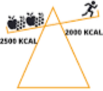

Lorsqu'on fait de la musculation l'alimentation est primordiale, c'est elle qui apporte l'énergie nécessaire à l'entrainement et les nutriments nécessaires à la prise de muscles mais c'est aussi elle qui détermine la prise ou perte de gras.
La balance calorique

Lorsque l'on consomme moins de calories que ce que l'on dépense on perd du poids, on parle de déficit calorique.
Lorsque l'on consomme autant de calories que ce que l'on consomme, notre poids reste le même, on parle de maintien calorique.
Lorsque l'on consomme plus de calories que ce que l'on consomme, on prend du poids, on parle de surplus calorique.
Les Nutriments
| Nutriments | |||||
|---|---|---|---|---|---|
| Macronutriments | Micronutriments | ||||
| Ils apportent au corps l'énergie dont il a besoin. | Indipensables au bon fonctionnement du corps bien que ne contenant aucune énergie. | ||||
| Protéines | Glucides | Lipides | Vitamines | Minéraux | Oligoéléments |
| Indipensables à la fabrication de muscle | Principale source d'énergie du corps | Utilisés par le corps pour le stockage de l'énergie | Joue un rôle dans les réactions métaboliques | Indispensables à la vie des cellules | Interviennent dans l'activité des hormones |